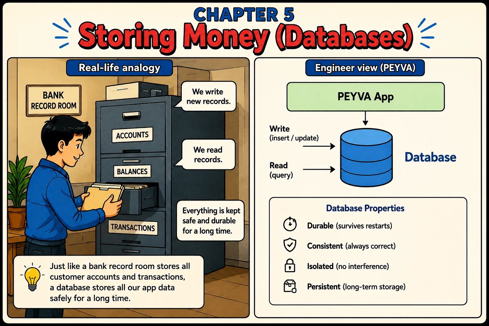

Chapter 5
Storing Money (Databases)
A bank keeps records in a safe place so nothing is lost.

1. What
- Durable. Written where it survives the program being killed. Only true once the disk has confirmed it.
- Persistent. Kept outside the program's memory, so it is still there next run.
- Source of Truth. The one place a value is official. Anything else holding it is a copy that can be wrong.
- Migration. Moving data you already have to a new home without losing any, here from memory to disk.
2. Why
- Durable means the disk has confirmed the write. Until then it sits in memory, and a power cut takes it.
- A database is what makes 'saved' mean something: it orders writes, forces them to disk, and repairs half-finished ones after a crash.
- Once the data lives outside the program, every read is a trip and every write is a wait.
- Keep one official copy. Two copies of a balance disagree the first time only one of them is updated.
- SQLite is a real database in a single file. No server to install, and enough for everything here.
3. How Hands-on Building in Go, change in Chapter 0
Two choices first: the language you are building in, and the system you are on. Make them in Chapter 0. The prompts below stay locked until you do.
Explicit success criteria. Specify the finish line rather than the steps, and the assistant works out the delta, including what you would have forgotten.
Documented in Anthropic: Prompting best practices, Provide clear success criteria
Every prompt below is copied with these rules, about 343 tokens for the chapter
Build this in Go, standard library only.
Code in peyva/<component>/, one folder per component.
Money: exact decimal or integer minor units, never floating point, two decimal places.
The goal and invariants are in peyva/goal.md.
The Portal is plain HTML and CSS. No framework, no build step, no dependencies.
It lives in peyva/portal/. Anything it needs from the server is Go, standard library only.
One customer's wallet at a time, never everyone's at once. A switcher at the top says whose.
New work joins the menu.
The goal and invariants are in peyva/goal.md, the look in peyva/portal/design.md.
1 of 2 Build~206 tokens
The Vault holds balances in memory, so every restart resets alice to her starting amount. Keep accounts in a file on disk instead, with SQLite. Create it on first run, seed alice only if she is missing, and keep no balance in memory. If your language has no SQLite built in, say so and use the most common driver, preferring one with no C toolchain. Name it. The Gateway and Teller do not change from outside. Say what happens between my write returning and the bytes being safe on disk. Done when a restart still shows alice's balance, and deleting the file is the only thing that loses it.
2 of 2 Portal~137 tokens
The Portal still shows balances from memory. Read them from the Vault's file on disk instead. Done when I make a payment, restart, reload, and the new balance is still there.
Quick tip: A file on disk beats a variable in memory, and SQLite needs no server to give you one.